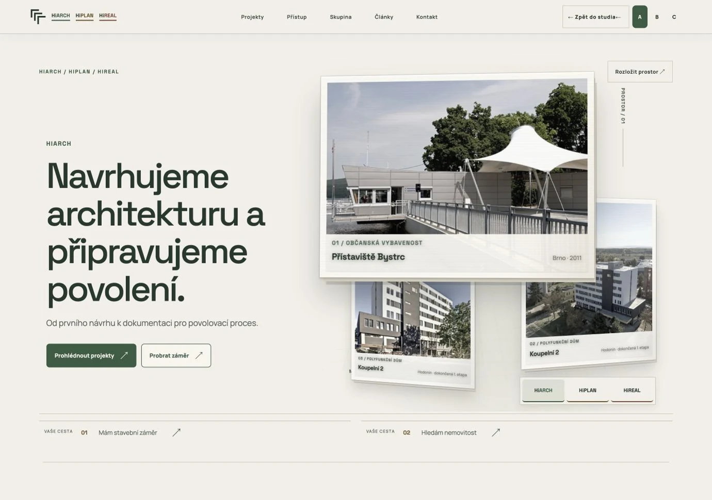

A / PAPÍROVÝ ATELIÉRPROSTOROVÁ PAPÍROVÁ MAQUETA
Otevřít variantu A ↗Papírový ateliér
Teplé materiály a skutečné fotografie. Přepnutí HiARCH, HiPLAN nebo HiREAL mění službu i aktivní projekt.
Ovládání: přepínání firem, listování kartami a postupem práce.